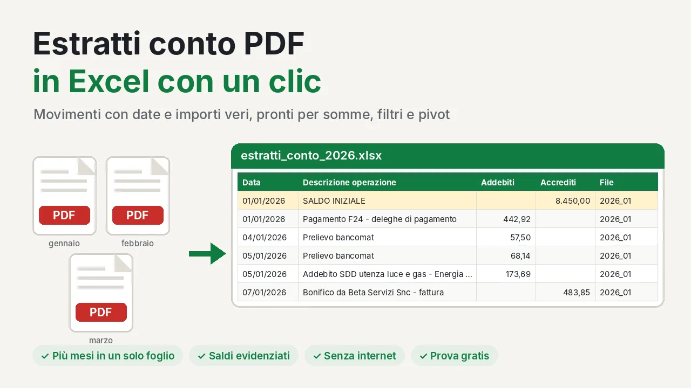
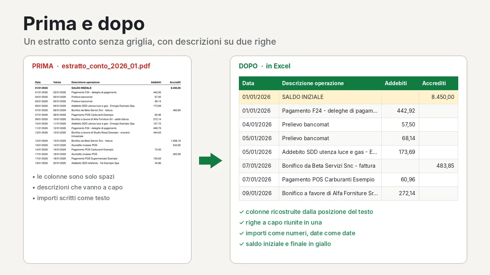
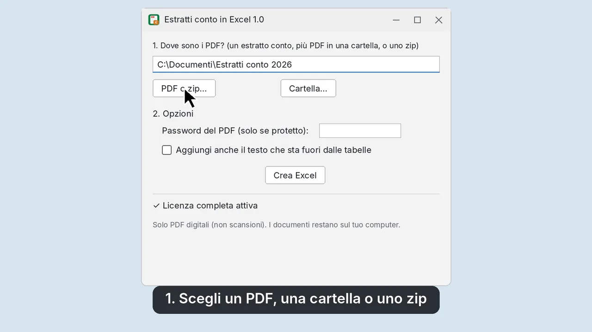
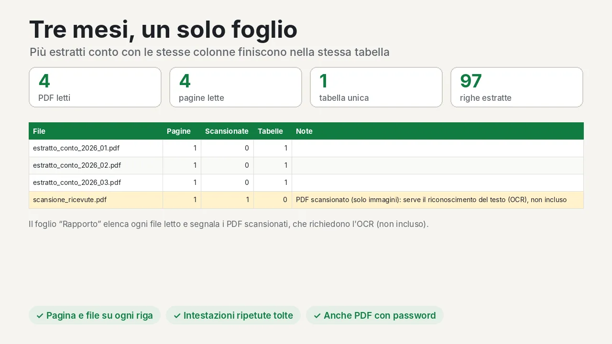

Estratti conto PDF
in Excel con un clic
Scegli un estratto conto in PDF, o una cartella con più mesi, e ottieni una tabella Excel con una riga per movimento: data, descrizione, addebiti e accrediti come veri numeri.

Cosa ottieni
- Una riga per movimento, con date e importi pronti per somme, filtri e pivot
- Le descrizioni che vanno a capo riunite in una sola riga
- Più mesi uniti in un'unica tabella
- Saldo iniziale e finale evidenziati in giallo
- File e pagina di provenienza su ogni riga
- Un foglio "Rapporto" con i file letti e i PDF scansionati segnalati

Come funziona

- Scarica il programma: è un solo file, non serve installarlo.
- Scegli un PDF, una cartella con più PDF o un file zip. Se il PDF è protetto, inserisci la password.
- Clicca Crea Excel.
Vuoi provarlo prima con dati inventati? Scarica gli estratti conto di esempio (tre mesi in PDF) e convertili.

Prezzo
Prova gratuita: fino a 30 righe per volta. Licenza completa: 24 € + IVA, una volta sola, valida per sempre su un massimo di 3 computer. Se dopo l'acquisto il programma non legge i tuoi estratti conto, scrivi entro 14 giorni: proviamo a risolvere o ti rimborsiamo.
Domande frequenti
Funziona con la mia banca?
Funziona con gli estratti conto in PDF digitale in cui i movimenti sono in forma di tabella, con o senza griglia. È stato provato su estratti conto di diverse banche italiane. Il modo più sicuro è provarlo gratis sul tuo estratto conto.
I miei dati vengono inviati da qualche parte?
No. Il programma lavora solo sul tuo computer. Internet serve una volta sola, per attivare la licenza: viene inviata a Gumroad solo la chiave.
Funziona con altri PDF?
Sì, con qualsiasi PDF digitale che contiene tabelle: listini, preventivi, report.
Funziona con i PDF scansionati?
No: servirebbe il riconoscimento del testo (OCR), non incluso. Il programma li riconosce e li segnala nel foglio Rapporto.